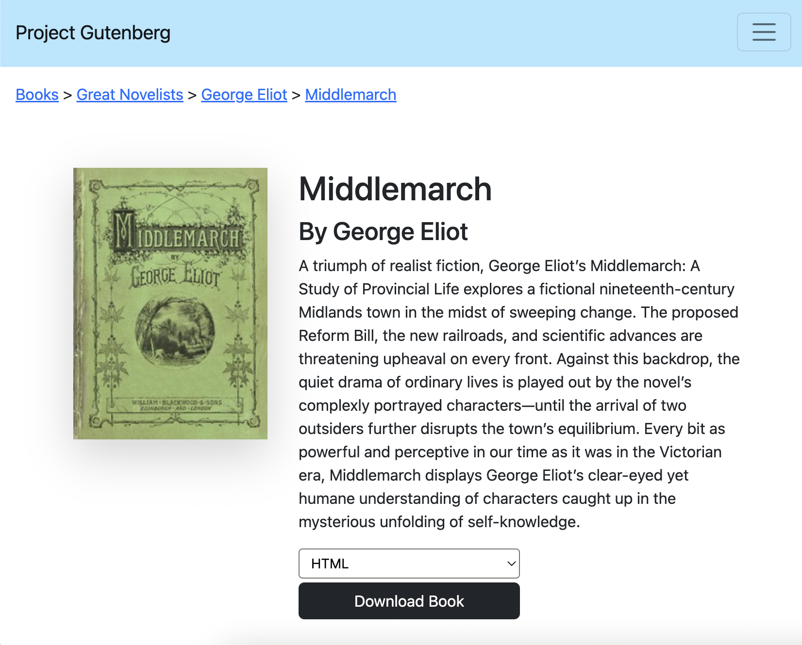
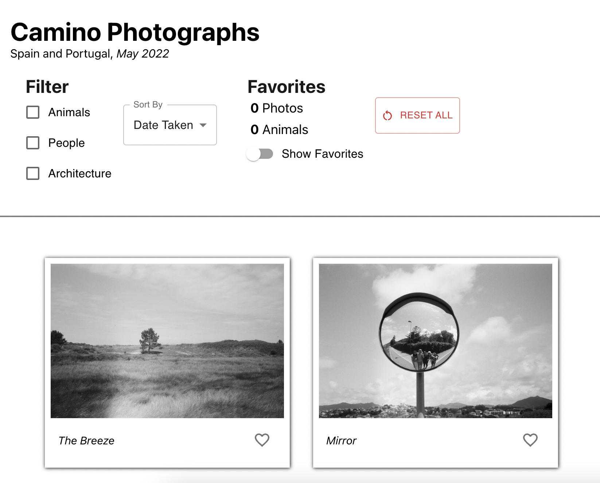
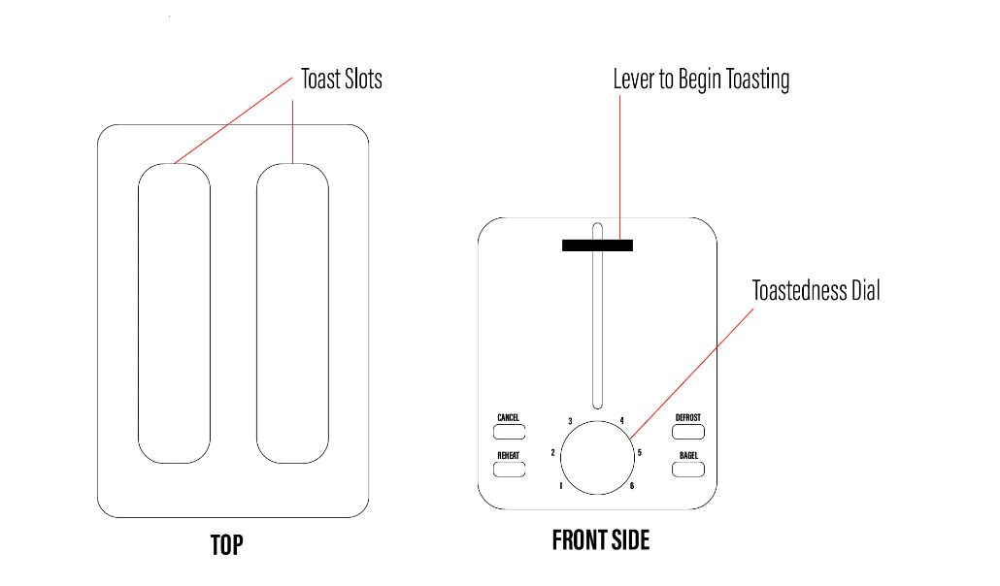
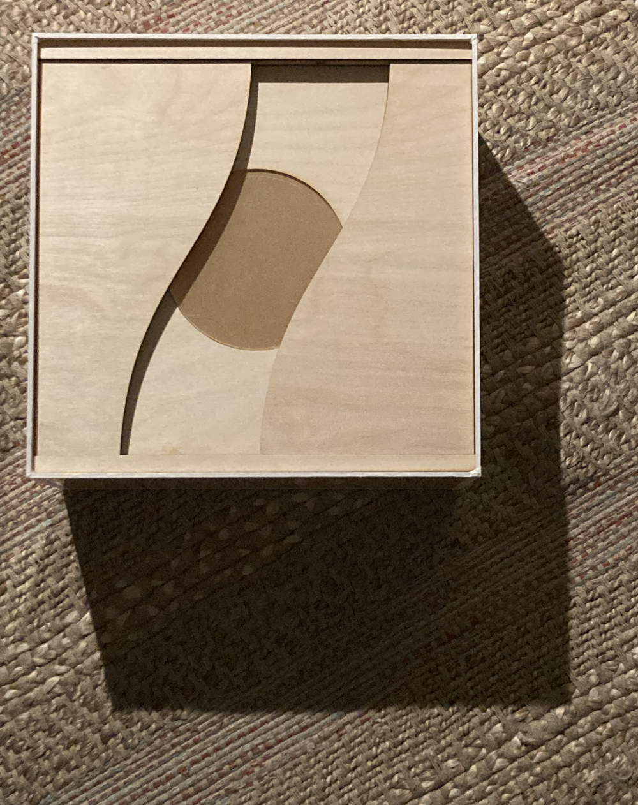

I am a designer, photographer, and filmmaker from Providence, Rhode Island.
My goal is to design interfaces that offer a transparent and unbiased experience. As a photographer,
I am especially interested in how our media outlets shape the way we create, consume, and distrubute videos and photos.
I think media platfroms should function as blank canvases that allow (and don't flatten) the various ways we express ourselves.
As I am still a student of design, the work I have here showcases my development as a designer striving to create interfaces
which don't get in the way. In my future projects, I hope to focus on specifically photographic websites and applications.
Projects
Responsive Redesign

Project Gutenberg is one of the largest online e-Book libraries on the web.
Because of my interest in media distribution platforms, I decided to redeign their old website to enhance ease of use and aesthetic value.
Throughout the project, I made sure to stick closely with Project Gutenberg's commitment to adaptability and freedom of use. Enter Site
Photo Gallery

In May 2022, I hiked the Camino De Sangtiago in Spain. I brought along my grandfathers
film camera and took a series of photographs. Since they are film, and not digital, I have since struggled to
interact with and share the photos. In order to practice my react skills, and also experiment
with the presentation and filtering of my photographic work, I decided to create a website of my Camino photographs to share with friends. Enter Site
Toaster Interface Analysis

Every morning, my roomates and I use the same toaster. In order to practice my storyboarding and persona creation
skills, I decided to use the device as a test subject. By analyzing my roomate's interactions with the device I was able to
achieve a more nuanced perspective on how small design choices can change how our mornings unfold. Please check out an overview of
the process below to see how I used storyboards and personas to dig deeper into a simple interface. Enter Site
Material Design

Beyond digital design, I am also interested in how physical objects can pull us away from our
phones and into the real world. In my Material Design class, I designed a small light box that operates off of
the users' phone flashlights. This experiemental design project is my modern take on the campfire - instead of tinder
and sticks the user must place their phone in the box to light up the room. Enter Site